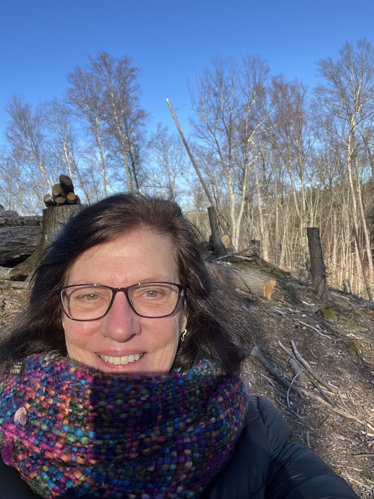
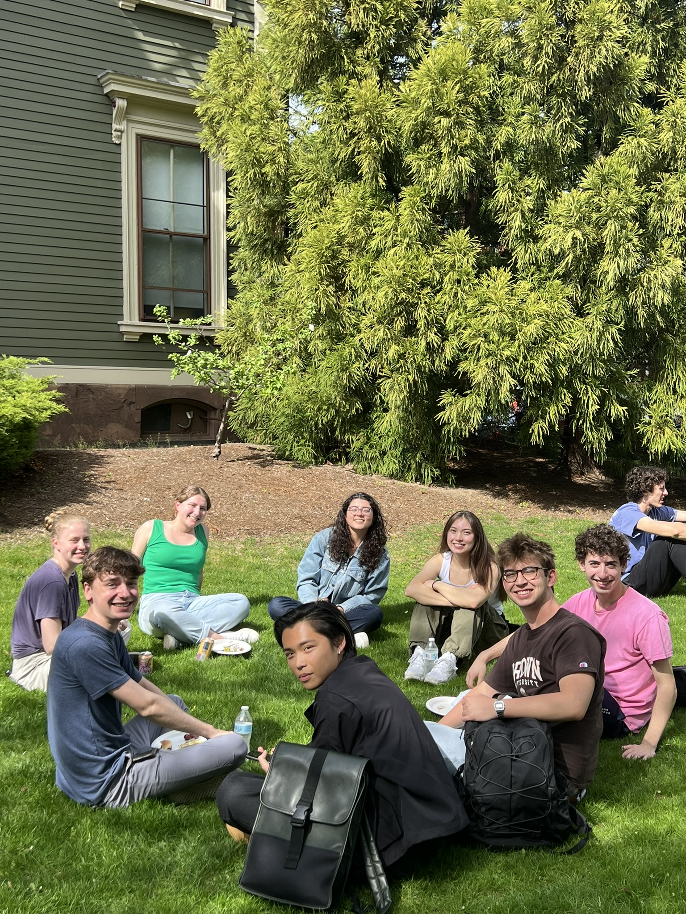
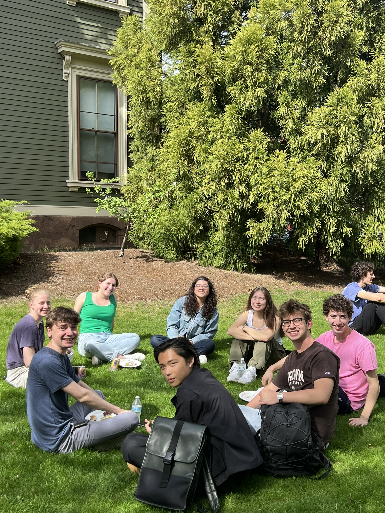
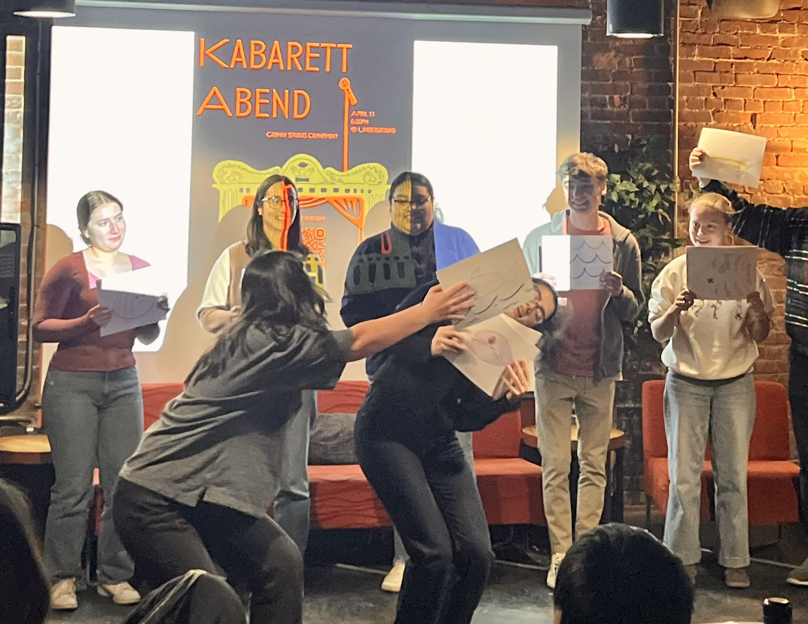
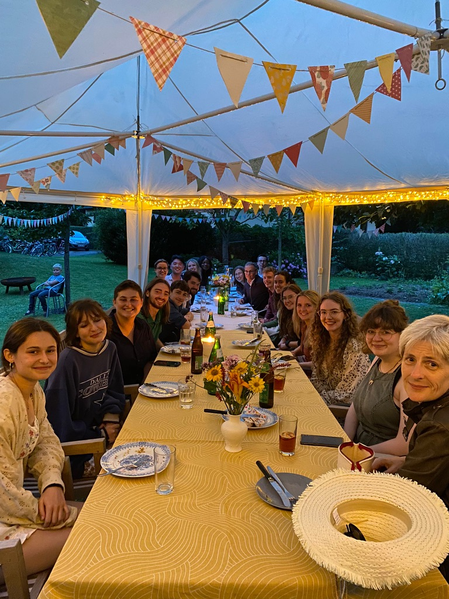
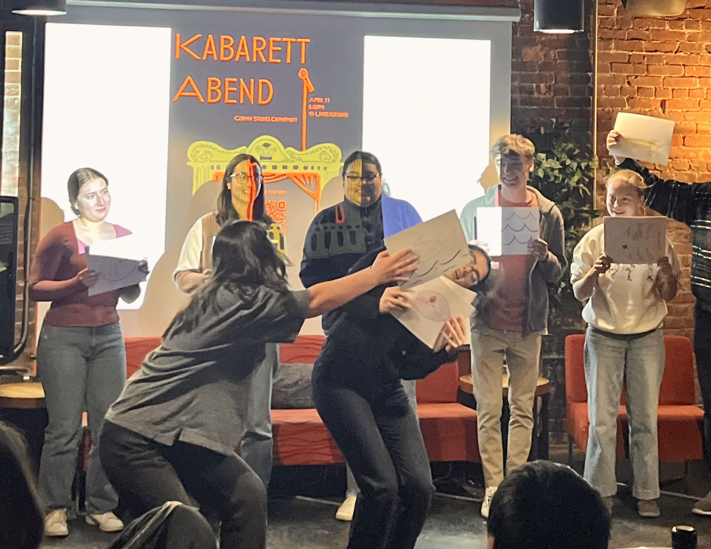
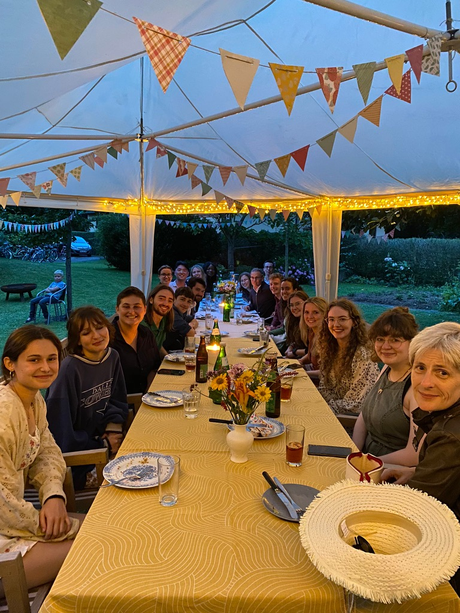

About Me
Über mich
Hi! I'm Frau Sok. I love learning and teaching languages. My favorite place to be in the summer is Berlin and the surrounding countryside. I'm a faculty member in German Studies at Brown University where I coordinate and teach the beginning and intermediate German language sequence, mentor graduate students who are teaching assistants in our department, and advise undergraduates about studying and interning abroad. For this work, I was awarded Brown University's Harriet W. Sheridan Award for Distinguished Contribution to Teaching and Learning.
From 2018-2024, I was the Director of Brown's Center for Language Studies (CLS) where I spearheaded new initiatives such as Brown's Certificate in Intercultural Competence, translation conferences, language hours in the SciLi, Open Mic night, World Trivia Night and the hiring of Brown's first full-time instructor in an African language.
My Teaching
Meine Lehre
📷 Upload a teaching photo here
Working with students is a miracle! In a Beginning German Course, I see them enter the first day of class not knowing any German but eager to learn the language and to know more about the history and culture and three months later, I watch them presenting in German on topics of their own choosing showcasing their interests in the German-speaking world. The intermediate level is most challenging as students must start to speak in paragraphs with more detail. But this too they can manage! We create a lot of shared content so that students are learning from each other and not just from me. We've created information blogs and creative newspapers and serial novels. When I was at Middlebury, I taught the senior seminar devoted to my dissertation topic on turn-of-the-century Vienna.
My Scholarship
Meine Forschung
📷 Upload an image related to your research
My research focuses on language pedagogy, the integration of language learning and intercultural competence, and the application of new technologies in language learning. I regularly present at conferences and have received Brown's Teaching with Technology Award and the Sheridan Award for Teaching and Learning. I am a co-author of the second-year German language textbook, Denk mal! (4th Edition, 2024).
One of my wildest memories is presenting at the ACTFL (American Association of Teachers of Foreign Languages) annual conference when iPods were first invented. The room was packed with over 200 participants who were curious about the pilot program at Brown where we were given 10 free songs on these small devices to use in our language courses. It's been an amazing ride as we see language technology evolve over time to include large language models, voice recognition and AI.
For more detailed information, please visit my Brown University professional page.
My Students
Meine Studierenden
📷 Upload a photo with students or student activities
Please reach out to me via email with any questions you may have about courses, study abroad, German grammar or to schedule a one-on-one meeting in person or via Zoom.
Email: Jane_Sokolosky@brown.edu
Office: 190 Hope Street at the corner of Waterman and Hope
In my classes, students come prepared to engage in a lively class using the German vocabulary and grammar they have learned and practiced in their homework leading up to class. I have always used this flipped model in my language classes because I've found it gives students something in class that they don't have outside of class: speaking partners using German. We use a lot of pair work and graduate students and undergraduate students are very familiar with my phrase "Plus einen Satz". This is a reminder not to answer with just yes or no or by repeating the content of the question but to give an additional answer, a novel sentence to extend the conversation.
My students have graduated from Brown to pursue many careers as engineers, lawyers, advocates, architects and as German professors. Their curiosity about the world and their diligence and focus in learning a new language served them well!
📷 Student image 1
📷 Student image 2
📷 Student image 3
📷 Student image 4
📷 Student image 5
📷 Student image 6
📷 Student image 7
📷 Student image 8
Germany
Deutschland
📷 Upload a photo of Germany
General information about Germany, its culture, and language.
Berlin
Berlin
📷 Berlin image 1
📷 Berlin image 2
📷 Berlin image 3
📷 Berlin image 4
Berlin is my favorite German city! The first time there was with a week funded by DAAD as part of my Hamburg junior year study abroad program with Smith College. Many years later, I returned shortly after the fall of the Berlin Wall to study at the Freie Universität. Nowadays, I return every year and always find a new bookstore or cafè or an interesting exhibit to expand on my knowledge of German culture and trends. I have also had the opportunity to travel to Berlin with undergraduate students. There's something very special about witnessing your students being amazed to see the Brandenburg Gate for the first time or working hard to speak only German in the subway and around town!
Austria
Österreich
📷 Upload a photo of Austria
Austria was extremely important for my trajectory as a German professor. Right after college, I was awarded an Austrian Fulbright to teach at a teacher's college in the city of Linz, located on the Danube River and famous for music from the Brucknerhaus to Ars electronica and Philip Glass. Vienna became an important source for my scholarship on fin-de-siècle Vienna and my dissertation on the writer and women's rights advocate Rosa Mayreder.
Switzerland
Schweiz
📷 Upload a photo of Switzerland
In fourth semester German, students read Friedrich Dürrenmatt's crime novel Der Richter und sein Henker. They love the novel's presentation and discussion of the role that fate plays in our lives. Hopefully, students are also drawn to visit the Swiss city of Bern where the novel takes place.
Wust
Wust

What's the Wust internship?
Was ist das Wust-Praktikum?
Ever since the fall of the Berlin Wall, the Sommerschule Wust for English Language, Literature, Theatre and Music has recruited highly energetic and enthusiastic Brown students as ESL instructors. In any given summer, you'll find anywhere from 4-10 Brown people teaching or visiting there. You'll work with a team of college students from the US and the UK to teach English through classroom instruction and a variety of workshops. You'll live in the charming village of Wust, about an hour west of Berlin, close to the River Elbe in former East Germany.
Applications are due at the beginning February. Please email me with any questions or to express your interest.
Study Abroad
Studium im Ausland
📷 Upload a photo of study abroad students
Brown students have the opportunity to study abroad in either Berlin or in Freiburg (near the French border). Students must have completed beginning German in order to join either of these programs. Berlin is a cosmopolitan city with a rich history and lively social scene. Students study in Berlin on the IES Berlin program. Freiburg is a city known for its sustainability, its trees, and its prolific bike culture. Students live in dorms, take courses at the university or at the IES Freiburg center. Both options are excellent ways to expand your understanding of the world and to improve your German.
Photo Gallery
Fotogalerie

 



 


